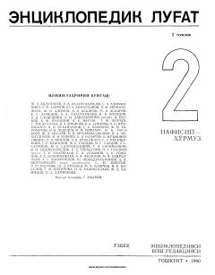

ELNafisiy va Ho'rmuz harflari oralig'idagi tushunchalarni o'z ichiga olgan ensiklopedik lug'at.
Ushbu ensiklopedik lug'atning ikkinchi jildi 'Nafisiy' so'zidan 'Ho'rmuz' so'zigacha bo'lgan tushunchalarni qamrab oladi. Kitobda ijtimoiy-siyosiy, iqtisodiy va madaniy sohalarga oid ko'plab maqolalar hamda biografik ma'lumotlar jamlangan. 1990-yilda chop etilgan ushbu nashr o'zbek tilidagi atamalarning keng izohini taqdim etadi.